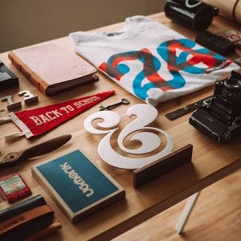

وسام
قائد المشروع وبرمجة JavaScript
ID: Wesam_291213منصة طلابية بسيطة تجمع فعاليات الجامعة والمدينة، وتساعدك تعرف ماذا يحدث ومتى وأين.
طلاب الجامعة الافتراضية موزّعون في كل مكان، وكثير منهم يسمع عن الندوة أو الورشة بعد انتهائها. لذلك بنينا دليلاً واحداً واضحاً، يعرض كل فعالية بتاريخها ومكانها وتفاصيلها، ويسمح بإضافتها للتقويم ومشاركتها بضغطة زر.
تسهيل الوصول إلى فعاليات الجامعة والمدينة، وتشجيع الطلاب على المشاركة والتواصل خارج قاعات الدراسة الافتراضية.
أن يكون الدليل المرجع الأول لكل طالب يبحث عن نشاط مفيد أو ممتع، في الجامعة أو في مدينته.
نؤمن أن المعرفة والثقافة والرياضة حق للجميع، لذلك نعرض الفعاليات المجانية والمفتوحة أولاً، وبلغة بسيطة وواضحة.
طلاب من الجامعة الافتراضية السورية عملوا على تصميم الدليل وبرمجته.
قائد المشروع وبرمجة JavaScript
ID: Wesam_291213
تصميم الواجهات و CSS
ID: yasmine_305124المحتوى والاختبار والاستضافة
ID: alaa_241456